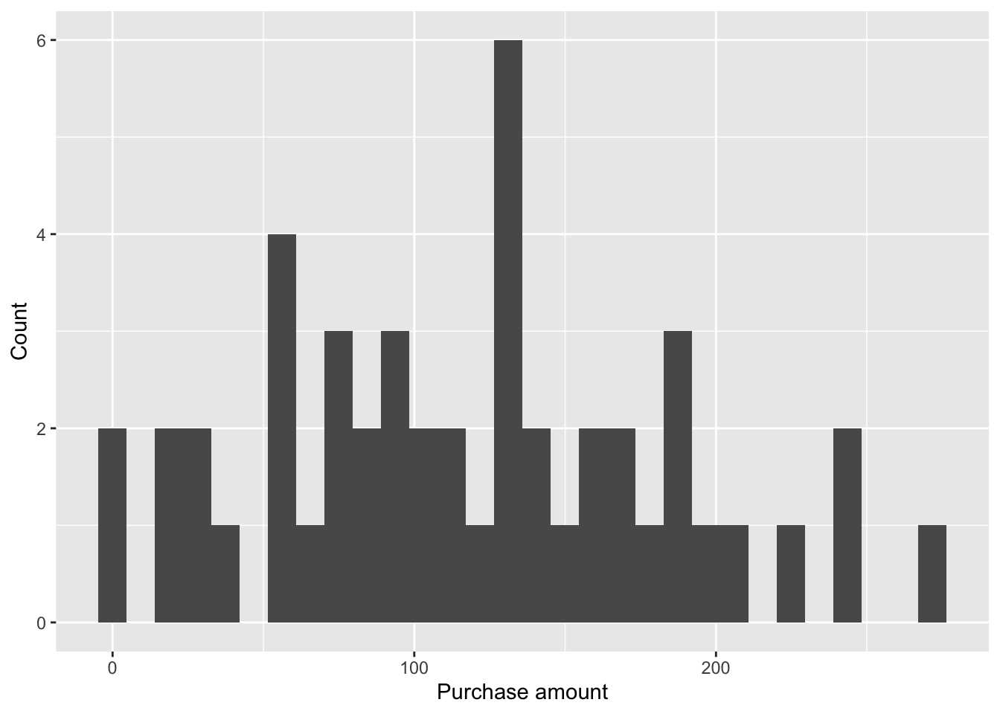
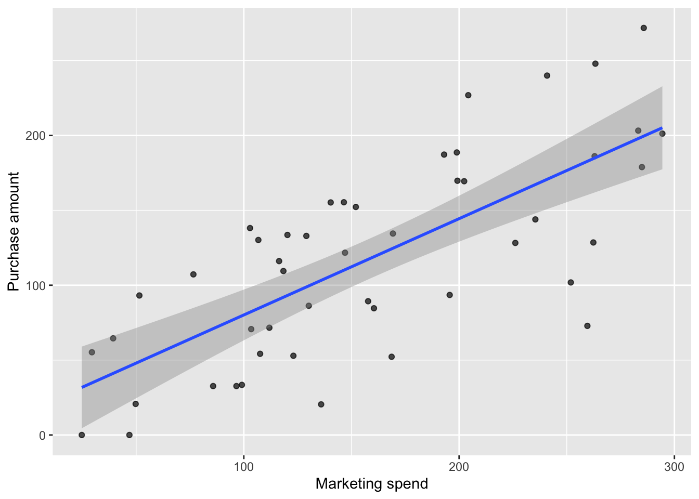
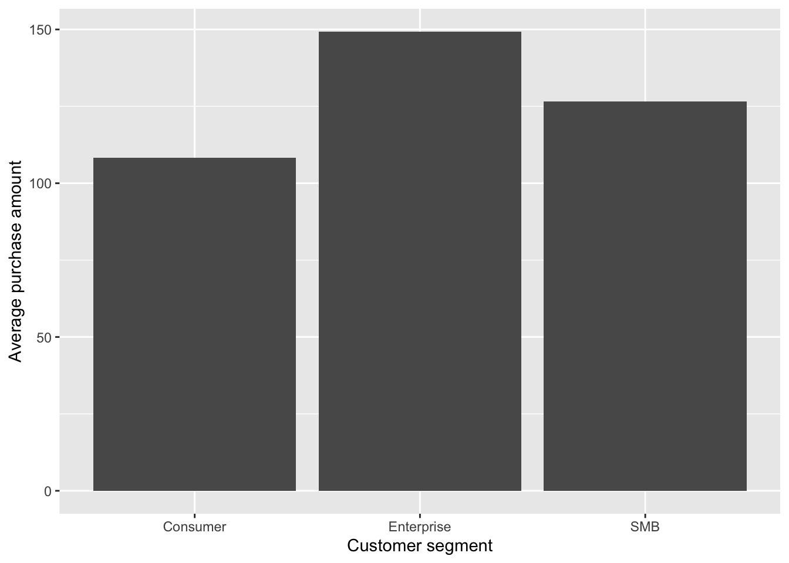

| marketing_spend_mean | marketing_spend_sd | visits_mean | visits_sd | purchase_amount_mean | purchase_amount_sd |
|---|---|---|---|---|---|
| 158.1546 | 76.01036 | 5.25 | 2.418897 | 117.5342 | 66.85406 |
ETC5513 Assignment 1
Introduction
This report analyses a customer-level marketing dataset containing variables such as marketing spend, website visits, and purchase amount. The dataset is stored in the project’s data folder to support a reproducible workflow. The aim of this report is to examine whether higher marketing spend is associated with higher purchase amounts. Understanding this relationship is important for evaluating the effectiveness of the marketing campaign.
Research Question
This report investigates whether customers who received higher marketing spend tended to make larger purchases. It also considers how customer visits relate to purchase outcomes. The goal is to identify whether the campaign spending appears to be positively associated with purchase amount.
Dataset Introduction
This dataset contains customer-level marketing campaign data, including variables such as marketing spend, number of visits, and purchase amount. The data is stored as a CSV file within the project directory to ensure reproducibility. Before analysis, the dataset was cleaned by removing missing values and checking that variables were in appropriate formats. Any incomplete observations were excluded to improve data quality. The cleaned dataset is used for all subsequent analysis in this report.
Dataset Description
The dataset contains 48 observations and 7 variables.
The dataset includes both character and numeric variables, capturing customer information, campaign activity, and purchase outcomes.
Table Table 1 presents summary statistics for the numeric variables.
Figure Figure 1 shows the distribution of purchase amounts in the dataset.

Results


Figure Figure 2 shows the relationship between marketing spend and purchase amount.
There is a clear positive trend, indicating that customers who received higher marketing spend tended to make larger purchases.
Although there is some variation around the fitted line, the overall pattern suggests a strong positive association.
Figure Figure 3 provides additional context by comparing average purchase amounts across customer segments.
Enterprise customers have the highest average purchase amount, followed by SMB and Consumer segments.
This suggests that customer type may also influence purchasing behaviour.
Overall, the results indicate that higher marketing spend is associated with higher purchase amounts, although this relationship should be interpreted as correlational rather than strictly causal.